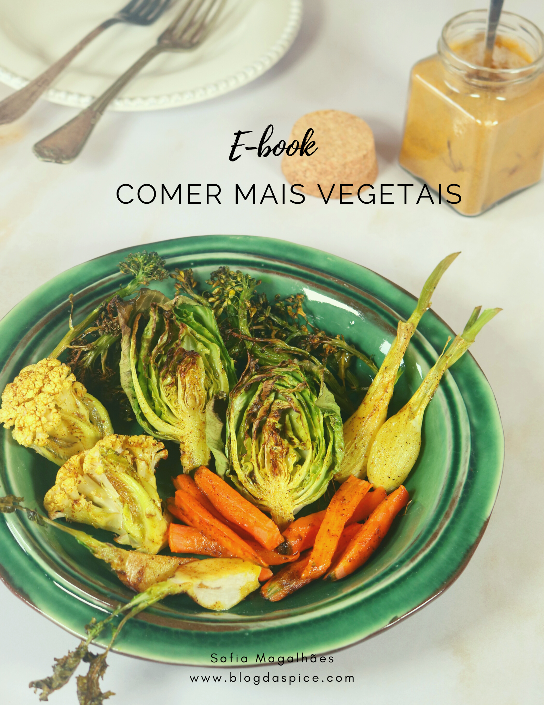

E-book Comer mais vegetais

Neste e-book encontra mais de 30 receitas para incluir mais vegetais na sua alimentação e de forma deliciosa. Seja em pratos principais, acompanhamentos, snacks, ao pequeno-almoço ou até na sobremesas!
R$45,00